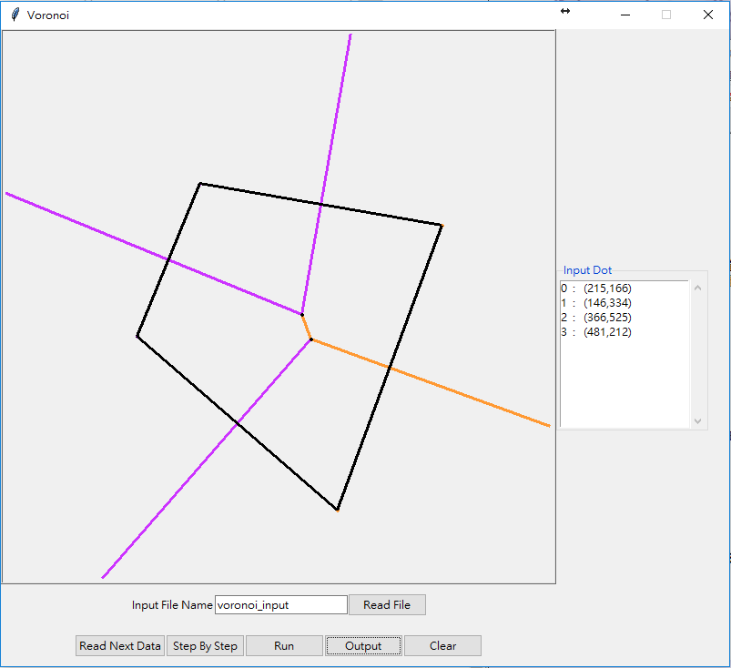
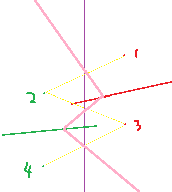
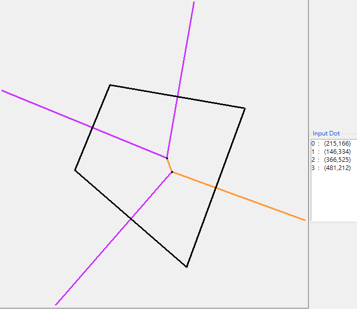
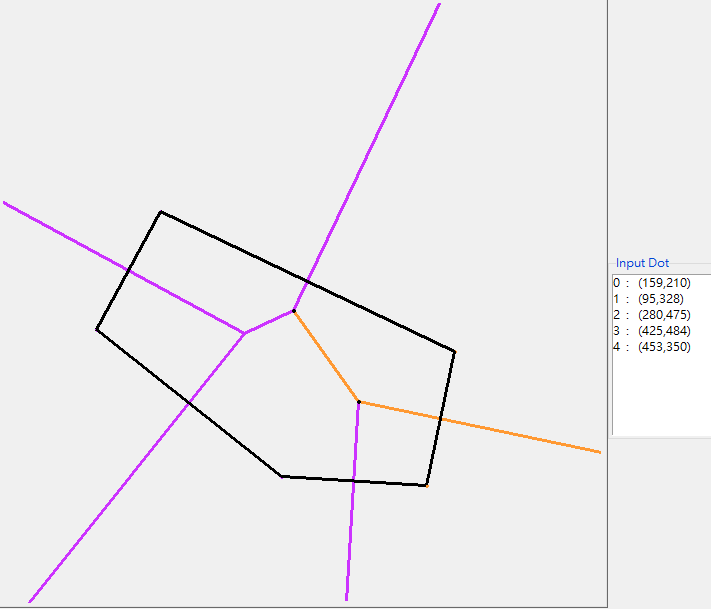
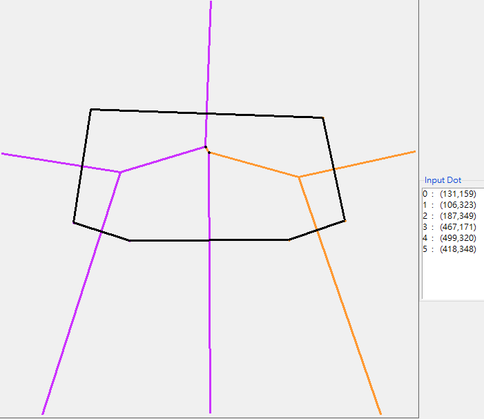

Voronoi Diagram
軟體規格書:
-輸入格式:
1. 一般輸入檔:
n #n為正整數或0,有n個點要輸入,若為0,則輸出"讀入點數為零，檔案測試停止"
x1 y1 #點的x座標與y座標, 下面n行以此類推
x2 y2
x3 y3
... ...
xn yn
2. 輸出之資料再重新輸入:
P x1 y1 #P表point, 後面為其座標
P x2 y2
E ex1 ey1 ex2 ey2 #E表edge, 後面為此edge的兩端座標, ex1<=ex2, ey1<=ey2
-輸出格式:
P x1 y1 #P表輸入的座標點, 後面為其座標, 各座標點以lexical order排列
P x2 y2
P x3 y3
P x4 y4
E ex1 ey1 ex2 ey2 #E表voronoi diagram圖形的線段, 後面為兩端座標, 各線段以lexical order排列, ex1<=ex2, ey1<=ey2
E ex3 ey3 ex4 ey4
E ex5 ey5 ex6 ey6
E ex7 ey7 ex8 ey8
-介面與功能介紹:

右方 Input Dot 會顯示目前輸入的座標點
上方畫布中紫色和橘色線條為 Voronoi Diagram,黑色為 Convex Hull
可直接於畫布用滑鼠點出輸入點 or 在 Input File Name 後面的框框中輸入檔名(不需加副檔名)後,按 Read File,讀取檔案
按 Read Next Data,可讀取下一筆測試資料,直到讀到0
按 Step By Step,可讓程式一步一步的執行
按 Run,可直接將所有步驟執行完畢
按 Output,可把圖形輸出到檔案(預設檔名為 voronoi_output )
按 Clear,可清空畫布
軟體說明:
安裝Python3 IDE
未做防呆裝置, 因此隨意按Button時, 有可能會出現紅色的錯誤訊息, 但不會造成程式crash
例如: 檔名為空,但是按下Read File 、 輸入點在執行時造成的執行錯誤, 除以0之類的問題
程式設計:
資料結構: 主要是使用『List』，因為Python的List使用上非常方便。
宣告了三個Class，分別是Dot、Line和LineAndInterY
目的是為了要把資料放進List，並且比較方便做存取
Dot裡面有2個變數x,y，代表一個點的座標
Line裡面有11個變數，分別代表線段的兩端座標+它是由哪兩個點畫出來的中垂線+畫在canvas上的id+儲存它是否為射線+它所屬的位置
LineAndInterY跟Line只差了一個變數InterY，為了畫HP的時候要使用，儲存一開始divide時的中分線與左右兩邊的線段之交點
Step By Step 的步驟:
0: divide input座標點
1: 左邊Voronoi
2: 右邊Voronoi
3: 左邊Convex Hull
4: 右邊Convex Hull
5: HP + 擦線 (合併Voronoi)
6: 合併Voronoi
主要的Function:
-DrawLine: 給兩個點，畫一條中垂線
首先要先求兩點的斜率: m = (y1-y2)/(x1-x2)
但是y1=y2和x1=x2的直線算是特例，所以要個別處理
之後我們要求出兩點的中點+把斜率乘以-1，這樣就可以求出中垂線的方程式
-WhatCase: 判斷三個點的狀況是共線，還是哪種三角形
首先判斷他們的x1,x2,x3和y1,y2,y3是否相等，若都相等就是共線
不然就要找出它們所構成的三角形的外心
並且利用三角形的cos公式，判斷它是屬於什麼三角形
假設三邊為:s1,s2,s3，代入cos公式要求s1所對應的那個角是什麼角，cos1 = (s2平方+s3平方-s1平方)/2*s2*s3
若cos1大於0為銳角，cos1等於0為直角，cos1小於0為鈍角
然後再利用DrawLineForTri這個Function去對不同的角畫相對應的中垂線
-DrawLineForTri: 根據所傳入的cos值，去畫出對應方向的中垂線
因為三角形的外心會因為不同種的三角形而有不同的狀況
而外心其實就是三角形三邊中垂線的交點
因此下面列出三種不同的畫法
銳角三角形的外心在三角形內部，所畫的中垂線就都是從外心連向外部點的中點
直角三角形的外心在三角形斜邊的中點上，所以中垂線方向必須是從直角那個點連向外心
鈍角三角形的外心在三角形外部，所畫的中垂線要變成相反方向從三角形邊上的中點連向外心
上述三個Function是最主要的，之後下面會描述我如何畫出HP和擦線
首先我一開始會先在中間畫出一條divide的中線
我先找出左右兩邊Voronoi Diagram與這條中線的交點，然後依照交點的y值來排序
並且找出這些有交點的線所屬的點，然後從這些所屬點最高的那個點開始往下交叉做
若是左邊的點最高，下個點就往另一邊找，先求出兩點的中垂線，再擦去它與中線有交點的線的多餘部分
下方有個圖來表示我的作法

右邊的點為紅色的，左邊的點為綠色的
左右邊各自的線，是它們Voronoi Diagram
紫色那條為中線，依照這個範例它們的Voronoi Diagram與中線的交點依照y排序
紅色先，再過來才是綠色
所以在畫HP的時候，從最高點1開始，往另一側的方向找最高點2
劃出兩點的中垂線，也就是粉紅色那條
後來遇到了紅色那條線，形成了交點，所以就要把多餘的線擦除
下面也是以此類推，2->3，3->4，找出兩兩的中垂線和交點，擦去多餘部分，最後HP就完成了
最後介紹我如何找Convex Hull
我是依照老師講義上所講的，先做出Voronoi Diagram
就可以利用它所畫出來的『射線』，在O(n)的時間畫出Convex Hull
軟體測試與實驗結果:
測試環境: Python IDLE 3.2
使用的電腦硬體系統: CPU: intel(R) Core(TM) i5-4590, 記憶體:8GB
作業系統: Windows 10 專業版
測試數據(輸入與輸出)的文字檔連結放在附錄
很多Bug, 造成畫布上會有多餘的或錯誤的線條
4個點比較不會出現問題, 但有些case還是會error
5~6個點的Voronoi Diagram有些可以對, 有些會有問題, Convex Hull也會有錯誤
6個點以上就沒有做
下圖為4,5,6個點且無error的圖檔



結論與心得:
這個Term Project主要是讓我們實作老師課堂上所教的『用Divide-and-Conquer演算法畫Voronoi Diagram』，從一開始程式語言的選擇對我來說就是個問題，因為我原先所熟悉的語言是C/C++，但是它寫圖形化介面不太方便，最後在Java、C#跟Python的三選一之下，我最後選擇了Python，它跟C最大的兩個差別就是:第一，它在使用變數的時候，不需要事先宣告，要用的時候直接assign值給它就可以，而且也不用宣告它的型別；第二，它的變數使用的是Function Scope，而不是我們所熟悉的Block Scope，所以我一開始在使用區域或全域變數的時候非常不習慣，花了不少時間才漸漸搞懂這個語言到底怎麼使用，一切都了解之後才開始進入正式的程式撰寫。
初測的時候主要是在寫整個操作的介面，和處理四個點以下的測資，這個比較沒什麼問題，因為要考慮的沒有那麼多，只要兩點兩點的處理，就可以拿到全部的分數，後來完整測試的時候，因為要處理四個點以上的測資，所以要考慮的東西就比較多了，可能我在寫程式的時候，想得不夠周全，所以程式出現非常多的bug，導致很多測資測出來圖形都錯誤，也因為時間分配的問題，有各科的作業和報告要準備，所以沒辦法把所有心力都投在這個作業上，因此沒有拿到自己滿意的分數，雖然如此，我還是很高興能有這次的作業，讓我學了一個新的語言，也讓我了解divide-and-conquer到底是怎麼做的。